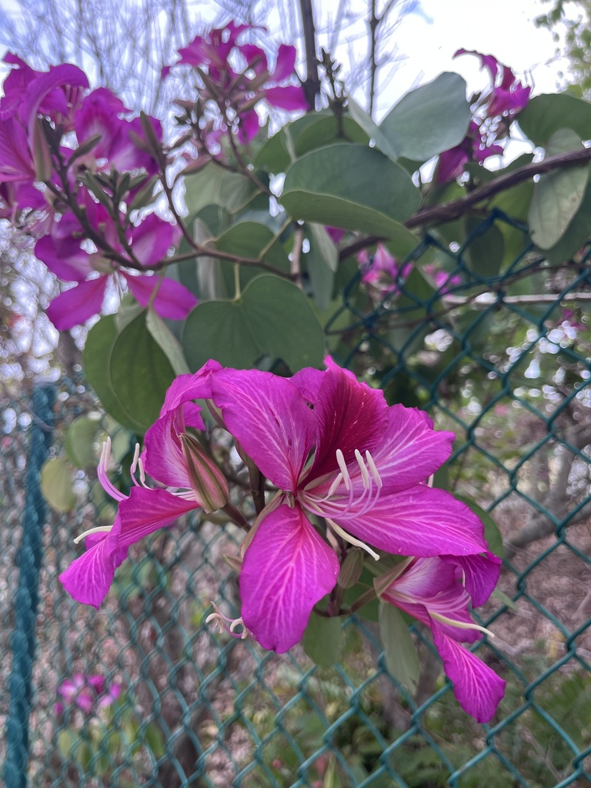

- Not related to orchids. The common name comes from the flower shape, which bears a passing resemblance. The actual family is Fabaceae — the legume family — making it a relative of beans, peas, and the park's own Royal Poinciana.
- The two-lobed leaf — perfectly split at the tip — is the identification key. Each leaf looks like a butterfly, or like a camel's footprint. The genus name Bauhinia honors twin botanists, the brothers Bauhin — the two-lobed leaf being a botanical joke about the twin namesakes.
- One of the most abundant street trees in Hong Kong, where it is also the emblem on the city's flag. The flag version is the sterile hybrid B. × blakeana, which does not produce seed pods.
- Blooms heavily in late winter when little else is flowering.
- The specimen that catches most visitors' eyes grows just beyond our parking lot fence on adjacent county property — visible, admired, and not yet ours. We are keeping an eye out for one to add to the collection proper. If you would like to donate an Orchid Tree to the park, we would know exactly where to put it.
Non-native. Native to southern China, India, and Southeast Asia. Member of Fabaceae — the legume family. Widely planted as a street and garden tree throughout the tropics and subtropics.
- The Orchid Tree blooms in late winter to early spring — a period when the park's flowering calendar is relatively quiet — which gives it an outsized visual impact for its size. The flowers are lavender-pink to purple, up to 4 inches across, covering the branches in a display that is visible from a distance.
- The two-lobed leaf is a reliable year-round ID feature. Each leaf is completely divided at the tip into two rounded lobes, giving it the outline of a butterfly or a camel track. The genus Bauhinia was named in 1694 by the botanist Plumier to honor the twin brothers Jean and Gaspard Bauhin, prominent 16th-century botanists — the two-lobed leaf being the botanical equivalent of a naming pun.
- The park's own Pink Orchid Tree (Bauhinia monandra, PSBP-00114) grows in a separate location — find it in the southeast corner past the bridge from the fruit garden.
Butterflies, bees, and hummingbirds visit the flowers. The late-winter bloom timing provides nectar at a period of relative scarcity for pollinators.
Seed pods are produced abundantly after flowering — long, flat, woody legume pods that twist and split explosively to disperse seeds. Birds feed on the seeds.
Lavender-pink to purple, with five petals, one marked with a deeper color stripe. Up to 4 inches across. Produced in late winter to early spring, often before the tree fully leafs out.
Long, flat, woody legume pods, 8 to 12 inches long. Twist and split explosively at maturity to disperse seeds. Produced in abundance.
The defining feature: two-lobed, each lobe rounded, split at the tip. The outline resembles a butterfly or a camel's footprint. Medium green, smooth.
Semi-deciduous small to medium tree, typically 20 to 35 feet. Open, spreading canopy.
The two-lobed leaves are the reliable year-round marker — no other common Florida tree has this leaf shape. In late winter, the lavender-pink flowers are distinctive. Compare with the Pink Orchid Tree (B. monandra, PSBP-00114) elsewhere in the collection — smaller flowers, single fertile stamen vs. the multiple stamens of B. variegata.
The young leaves and flowers are cooked as a vegetable in some Asian cuisines, and the flower buds are pickled — but it isn't a standard food plant here.
No significant toxicity to people or dogs is documented.


- © wanderingshaunzy (CC-BY-NC), via iNaturalist